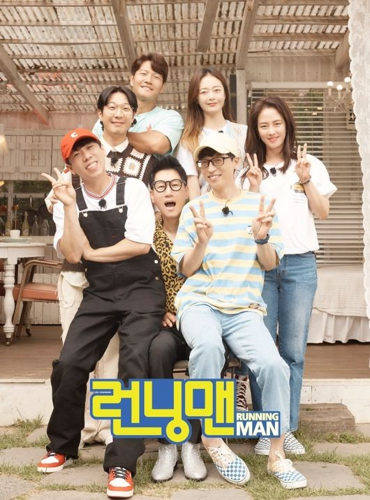
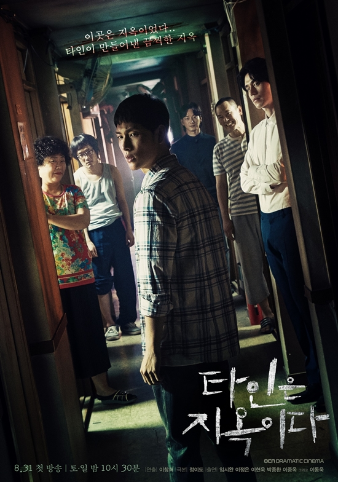
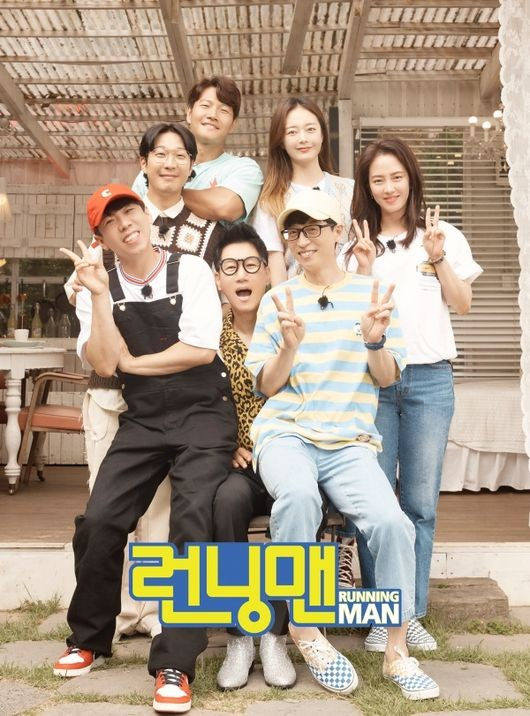
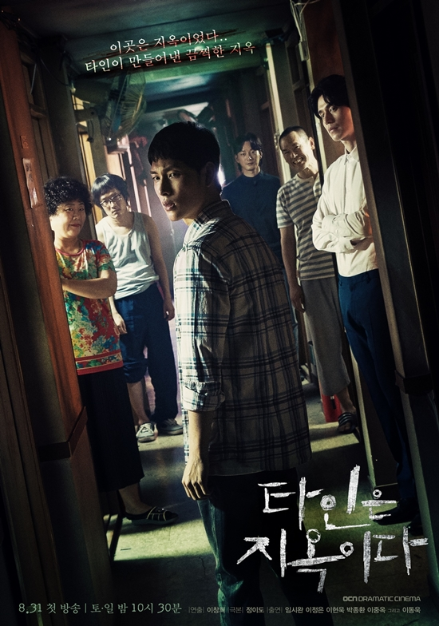

Hello, I'm Nur Huda Nabila Binti Saipudin. Turning 23 this September 6th. I'm a spirited individual currently navigating the exciting realm of Information Management System. Proudly a student at UiTM Campus Machang, My academic journey has equipped me with a robust foundation in Information Management and I'm always eager to explore the ever-evolving landscape of technology.
As a proactive and adaptable individual, I bring a strong set of skills to the table including effective problem-solving, a collaborative approach to teamwork, attentive active listening and proficiency in various computer applications. My dedication to finding innovative solutions, fostering positive working relationships and staying technologically adept allows me to contribute positively to diverse professional environments.
I love outdoor activities like hiking and running. There's something invigorating about exploring nature, whether it's conquering a challenging trail or enjoying a refreshing run. When I'm not outdoors, you'll often find me immersed in the world of sports especially badminton. I have a genuine passion for the game both as a spectator and player.
In my downtime, I have a soft spot for Korean dramas. The storytelling, cultural richness and emotional depth of K-dramas never fail to captivate me. It's my go-to source of entertainment and relaxation.
I absolutely love to release the accumulated tension and stress from my daily life by indulging in the delightful and entertaining world of 'Running Man.' This Korean variety show has become my go-to remedy, as its hilarious antics, engaging challenges and the The invigorating harmony among the cast members created a delightful atmosphere never fail to bring a genuine smile to my face.
 


